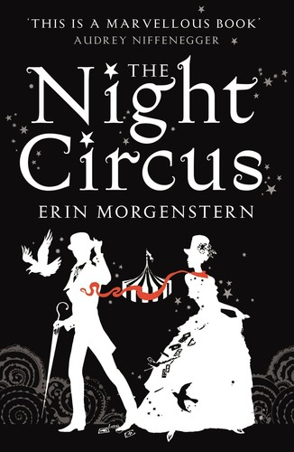
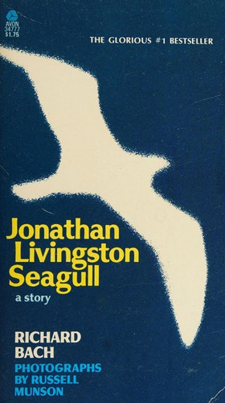

Audience Match
Analysis Overview
Mood & Tone
Intimate, self-aware narration that prioritizes meaning making over momentum.
Dry, sardonic humor that keeps high stakes from turning melodramatic.
A bittersweet undertone shaped by pressure, regret, and the weight of inheritance.
Uncanny intrusions tied to LEGACY that feel psychologically purposeful rather than random.
Tension driven by judgment, standards, and ethical consequence more than action pacing.
Sensory, tactile detail rooted in jewelry making, gemstones, and mastery.
Primary Audience Demographics
- • Consulting (management/strategy/IT)
- • Marketing/communications
- • Product and project management
- • Design and creative industries (incl. jewelry/fashion)
- • Entrepreneurs and small business owners
- • Finance and professional services
- • Higher education and teaching
- • Healthcare professionals
- • Instagram (craft, jewelry, aesthetic mood marketing)
- • TikTok/BookTok (upmarket/magical realism niches, quoteable 'lesson' snippets)
- • YouTube (author interviews; craft/design channels; philosophy explainers)
- • LinkedIn (leadership-fable positioning; excerpted 'lessons')
- • Reddit (r/books; literary fiction and magical realism communities)
- • Upmarket/literary book clubs seeking discussion prompts
- • Workplace/professional development book circles open to narrative nonfiction-adjacent fiction
- • Expats/international living book groups
- • Library-run discussion series for contemporary fiction
- • Online book clubs focused on 'thoughtful fiction' and modern fables
- • Word-of-mouth via book clubs (discussion-friendly structure: '100 Lessons', '3 nights')
- • Library staff picks for literary-commercial crossover
- • Podcast hosts (leadership, management, ethics, and culture)
- • Newsletter curators (literary/upmarket and self-improvement adjacent)
- • Read-alike algorithms anchored to Coelho/Gaarder/Morgenstern touchpoints
- • Browses front tables for 'smart fiction' and staff-recommended titles
- • Buys in airport/rail-station bookstores for travel reading (cosmopolitan tone fit)
- • Attends author talks and literary festival sessions
- • Comfortable with indie bookstores and online ordering for niche positioning
- • Likely to purchase audiobook/ebook after sampling opening chapters
- Prestige character dramas
- Workplace and power-dynamics dramas
- Limited series with philosophical/moral puzzles
- International/European-set series
- Dry-humor dramedies about modern life and ambition
- Smart, dialogue-driven dramas
- European cinema and cosmopolitan settings
- Magical-realist or surreal dramas
- Character-led stories about ambition, reinvention, and moral choices
- Tasteful prestige films with light mystery
- Indie and alternative
- Jazz and modern jazz playlists
- Ambient/lo-fi for focus
- Contemporary classical
- Singer-songwriter
- Design and craftsmanship content (materials, process, ateliers)
- Museum-going and gallery culture
- Architecture and interiors
- Photography (street and travel)
- Contemporary illustration and conceptual art
- Travel and city breaks
- Jewelry/design appreciation (even if not makers)
- Reading groups and discussion-based reading
- Podcasts (business, psychology, culture)
- Fitness/wellness routines (mirroring the narrator’s self-improvement thread)
- Cooking, wine, and bar culture as social rituals
Secondary Audience Demographics
- • Design and creative roles (graphic, fashion, jewelry, UX)
- • Marketing, social, and content
- • Startup and tech (product, ops, community)
- • Freelancers/contractors (gig economy alignment)
- • Early-career consulting/analyst roles
- • Hospitality and service industry (on-the-go audio reading)
- • Graduate students and academics-in-training
- • TikTok/BookTok (short quotes; 'lesson' snippets; aesthetic gemstone visuals)
- • Instagram (design/craft and travel aesthetics)
- • YouTube (video essays on meaning, work, philosophy-lite content)
- • Goodreads and StoryGraph (read-alike pathways)
- • Podcasts discovered via Spotify/Apple (culture + self-improvement crossover)
- • Online book clubs (Discord/Instagram/TikTok-led)
- • Theme-based clubs: 'work & meaning', 'modern fables', 'magical realism'
- • University/grad-school reading groups
- • Expat community book meetups
- • Influencer recommendations focused on 'thoughtful, quotable fiction'
- • Peer sharing of standout 'lessons' as screenshots/quotes
- • Algorithmic recs based on magical realism and upmarket fiction
- • Podcast interviews with an angle on leadership, craft, and purpose
- • Browses indie bookstores for aesthetically packaged literary fiction
- • Leans ebook/audiobook first; prints selectively as giftable objects
- • Likely to sample via Kindle preview or audio sample before purchase
- • Responsive to staff picks that emphasize 'smart, short, discussable chapters'
- Workplace dramedies
- International/expat-set series
- Prestige limited series
- Character-driven shows with moral ambiguity
- Stylish, city-centric ensemble dramas
- A24-style character dramas
- Stylish, craft-forward films (design/food/art worlds)
- International urban stories
- Soft-surreal or magical-realist cinema
- Darkly comic dramedies
- Indie pop/alt pop
- Electronic/chill playlists
- Neo-soul/R&B
- Lo-fi beats
- Contemporary classical for studying
- Contemporary design culture
- Luxury/craft content (gemstones, ateliers, process videos)
- Digital art and photography
- Street-style and fashion editorials
- Conceptual art with narrative hooks
- Travel hacks and lifestyle migration planning
- Wellness and self-optimization (with irony)
- Language learning and international culture
- Boutique cafés/bars and urban exploration
- Journaling and reflective/self-help adjacent content
- Online communities around books and aesthetics
Nadia Petrova
Upmarket Book-Club ReflectorBrand strategy lead for a design/luxury retail group • Berlin, Germany (international background; travels across Europe)
Age
32–40
Education
Master’s degree (Marketing / Cultural Studies)
Income
US$90,000–$140,000 equivalent
Status
Partnered, not married
Core Needs
To feel intellectually stimulated and emotionally steadied by fiction that offers insight into adulthood, vocation, and integrity; to experience beauty (craft, atmosphere) while also getting a coherent moral/psychological through-line she can apply to real life.
Fears
That the book will become overly didactic or self-help-y without earned character depth; that the magical elements will feel arbitrary rather than psychologically meaningful; that the ending won’t deliver a satisfying moral or emotional resolution.
Psychological Motivations
Meaning-making under pressure: she uses literary fiction as a safe, aesthetically pleasing space to metabolize her own work stress, questions about purpose, and complicated feelings about inheritance (family expectations, career identity, social mobility). She’s especially receptive to mentor/guide narratives because they externalize inner conflicts in a structured way.
Value Drivers
Relatable characters, community-driven drama, emotionally uplifting arcs, and realistic yet hopeful resolutions.
Books This Persona Loves
Top three highlighted, with more picks below.

The Alchemist
Paulo Coelho
A modern fable about pursuit, meaning, and listening for the right kind of guidance.

Sophie’s World
Jostein Gaarder
A philosophical narrative that makes big ideas feel personal and propulsive.

The Night Circus
Erin Morgenstern
Aesthetic, atmospheric storytelling where craft and wonder are part of the plot’s heartbeat.
Interest Profile
Films
TV Shows
Music
Art & Creative Interests
Hobbies
Reading Behavior
Social Style
Discusses themes in small circles and book clubs; shares a few curated quotes rather than live reactions.
Reading Times
Weeknights after work and long weekend mornings in cafés; listens to audio while traveling.
Recommendation Likelihood
High if the book offers discussable ethical dilemmas, a distinctive voice, and a memorable organizing concept (e.g., lessons/nights).
Reading Tracking
Uses Goodreads and a personal Notes app for quotes, themes, and discussion prompts.
Reading Habits
Discovery Methods
"I want a story that feels beautiful and useful—like a conversation that changes how I see my work and my life."
—
Marcus Alvarez
Leadership & Renewal SeekerManagement consultant / corporate transformation lead • Chicago, USA (travels internationally for work)
Age
44–55
Education
MBA
Income
US$180,000–$300,000
Status
Divorced; dating cautiously
Core Needs
To feel seen without being preached at; to find a narrative that frames leadership and ethics in human terms; to regain a sense of purpose and continuity (legacy) while navigating midlife transitions.
Fears
That the book will be too abstract or mystical without pay-off; that it will caricature consultants/corporate life; that the “lessons” framing will feel simplistic or like a thinly veiled business book rather than a real novel.
Psychological Motivations
He uses stories as a form of self-administered therapy: contained intensity, moral rehearsal, and identity repair. The first-person, slightly sardonic narrator appeals because it offers intimacy without emotional messiness. The mentor/guide device and structured lessons soothe his preference for frameworks while allowing him to approach grief, aging, and regret indirectly.
Value Drivers
Accountability, competence, integrity, pragmatism with depth, and personal renewal that is earned (not motivational).
Books This Persona Loves
Top three highlighted, with more picks below.

A Christmas Carol
Charles Dickens
A structured moral reckoning told with momentum and a redemptive undertow.
The Alchemist
Paulo Coelho
A modern classic about purpose, signals, and the cost of ignoring your inner life.

The Remains of the Day
Kazuo Ishiguro
A psychologically sharp portrait of dignity, regret, and the stories we tell ourselves.
Interest Profile
Movies
TV Shows
Music
Art & Creative Interests
Hobbies
Reading Behavior
Social Style
Social; enjoys discussing books and sharing insights with colleagues and friends.
Reading Times
Late evenings and during travel for work.
Recommendation Likelihood
Very high—sees books as tools for inspiration and social change.
Reading Tracking
Keeps a handwritten reading journal; occasionally shares reviews online.
Reading Habits
Discovery Methods
"If a novel can show me something true about leadership under pressure, I’ll remember it longer than any slide deck."
—
Category Placement & Go-to-Market Signals
This section shows where your book sits in the market, which categories it fits, and how readers and retailers are most likely to discover it.
Primary Category
Adult Upmarket / Literary-Commercial Fiction (Philosophical Fable with Magical Realism)Secondary Categories
Target Shelf Placement
- • Upmarket Fiction / General Fiction
- • Literary Fiction
- • Magical Realism / Speculative Literary
- • Book Club Picks / Reading Group Guides
- • Business-crossover display (select stores): leadership-as-story table feature
Price Positioning
Trade paperback and ebook priced in line with upmarket book-club fiction; consider premium hardcover (or special edition) leveraging jewellery/emerald visual motifs for gifting and display appeal.
Seasonal Strategy
Primary: fall lead title (book-club season, literary festival circuit). Secondary: January (renewal/self-reinvention themes) and spring (graduation/career-transition gifting and professional-conference tie-ins).
Brand Positioning
This section defines how your book should be presented to readers. It captures the core message, emotional appeal, and the traits that make it stand out.
Unique Value Proposition
A literary-commercial novel that reads like a compelling story while doubling as a “100 Lessons on Leadership & Legacy” fable—grounded in the rare, visually rich world of jewellery craftsmanship and ethical sourcing, and propelled by a magical-realist system with life-and-death consequences.
Target Reader Identity
Upmarket adult readers who enjoy philosophical fiction and modern fables; book-club readers; creatives and professionals drawn to leadership/ethics narratives; fans of quiet magic and cosmopolitan settings.
Emotional Appeal
Curiosity and intellectual engagement first, followed by bittersweet humor and a sense of earned renewal—readers close the book reflective, steadied, and mildly uplifted.
Market Differentiation
Unlike many magical-realist upmarket novels that foreground romance or family saga, this project foregrounds professional identity, leadership responsibility, and craft ethics—using the jewellery/emerald test as a concrete, high-status, high-visual stakes engine within an allegorical lesson framework.
Subgenre Similarity Signals (Model Output)
This section is a snapshot of the subgenres and story patterns your book aligns with, showing where it naturally connects in the wider landscape of discovery.
Unique Positioning Elements
This section highlights what sets your story apart in a crowded market and shows the qualities that make it stand out to readers and retailers.
A rare blend of artisan craft realism and leadership parable, delivered through a witty midlife narrator and a structured, episodic “three nights / 100 lessons” promise.
Competitive Analysis & Category Context
Direct Competitors
Books that share the closest mix of tone, tropes, emotional arc, and audience expectation. These are the titles your readers are most likely to consider alongside yours, and the ones your marketing, pitch, and positioning will naturally compete with.
The Alchemist
by Paulo Coelho
Similarities
- • Allegorical structure and philosophical takeaway
- • Accessible, readable prose with symbolic guidance
- • Emphasis on destiny/agency and personal transformation
Differences
- • Calista’s Paradox is contemporary and business-ethics driven rather than pastoral quest
- • Uses a midlife professional narrator and artisan craft specificity (jewellery/gemstones)
- • Frames learning as “100 Lessons” with a discrete multi-night structure
A Christmas Carol
by Charles Dickens
Similarities
- • Supernatural guidance structure
- • Discrete-night framing and moral instruction
- • Transformation/redemption pressure
Differences
- • Dickens centers Victorian social critique; Calista’s Paradox centers modern leadership, legacy, and professional ethics
- • More magical-realist/quiet-mystical texture versus overtly ghost-story tradition
- • Dual-protagonist energy (Calista’s business test + Consultant’s renewal) rather than single protagonist
Sophie’s World
by Jostein Gaarder
Similarities
- • Didactic/lesson-forward intent
- • Guide/mentor dynamic shaping the reader’s understanding
- • Big-picture philosophical questioning embedded in plot
Differences
- • Sophie’s World is explicitly a philosophy survey; Calista’s Paradox embeds ideas in business/craft dilemmas
- • More wry midlife voice and leadership framing
- • More magical-realist “system” stakes (LEGACY) rather than meta-philosophical structure

The Night Circus
by Erin Morgenstern
Similarities
- • Magical-realist atmosphere and artisanal focus
- • Emphasis on beauty, craft, and sensory motifs
- • Upmarket readership overlap
Differences
- • The Night Circus prioritizes immersive world-building and romance; Calista’s Paradox prioritizes leadership lessons and professional stakes
- • More grounded contemporary business setting versus a fully staged fantastical venue
- • A more overtly didactic framing (100 lessons) and consultant-narrator introspection
Indirect Competitors
Books that share adjacent themes, moods, or audiences. These aren't direct comparisons in plot or structure, but they attract readers who may also connect with your work. They help you understand nearby markets, crossover potential, and secondary positioning opportunities.

The Midnight Library
by Matt Haig
Similarities
- • Philosophical accessibility with emotional uplift
- • Existential/midlife or life-direction questioning
- • Speculative premise used as a device for meaning-making
Differences
- • Calista’s Paradox anchors meaning in leadership/legacy and craft ethics rather than alternate-life exploration
- • More business/atelier specificity and mentor-guidance mechanics
- • Wryer, more professionally oriented narrative lens
Contemporary, accessible, idea-driven fiction that explores regret, alternate paths, and renewal—competing for readers seeking reflective, uplifting philosophical premises.

Jonathan Livingston Seagull
by Richard Bach
Similarities
- • Parable/fable delivery of lessons
- • Focus on self-transcendence and purpose
- • Simple-seeming narrative used for moral/philosophical resonance
Differences
- • Calista’s Paradox is longer-form, more plot-anchored, and contemporary-cosmopolitan
- • More pragmatic leadership and inheritance themes with higher external stakes (business survival)
- • Denser character psychology and workplace/professional texture
A short allegorical fable with spiritual-philosophical lessons; competes in the inspirational parable space and giftable “meaning” fiction market.
Market Gaps & Opportunities
This section highlights areas where reader demand is high and competition is low, giving your book a natural advantage. Use these insights to shape pitch language, refine metadata, and guide your marketing and targeting choices.
-
Position “leadership lessons” as story-first (not prescriptive business nonfiction) for readers allergic to traditional self-help.
The project’s didactic promise (“100 Lessons”) is softened by a wry narrative voice and high-stakes plot in an unusual craft world, creating a bridge between book-club fiction and leadership interest.
Impact: Expands reach beyond core literary/magical-realism readers into professional and podcast ecosystems without rebranding as nonfiction.
-
Own a distinctive craft niche: jewellery/gemstone ethics and mastery as the central metaphor engine in upmarket fiction.
Many philosophical fables use generic professions; few foreground the sensory, high-status, visually compelling world of emeralds, bench craft, and gatekept expertise.
Impact: Stronger visual merchandising (cover, ads, social) and differentiated PR hooks (craft, ethical sourcing, luxury/heritage industries).
-
Capitalize on audio and spoken-word marketing with an episodic, time-boxed structure (“told in 3 nights”).
First-person conversational narration and discrete-night framing align with audiobook engagement and serialized excerpting for podcasts/LinkedIn audio/video.
Impact: Improved discoverability and completion rates in audio; easier content packaging into “lesson” clips and discussion prompts.
Marketing Strategy
Pre-Launch
6 weeks pre-launch (awareness)
- Introduce the concept: a magical-realist, philosophical fable told in three nights, framed as 100 lessons, with jewellery-craft stakes and a wry midlife narrator.
- Short-form video (15–30s), static image ads (emerald/loupe/shop), quote cards (“Legacy is both gift and trap.”), teaser carousel (3 nights / 3 questions), podcast pitch one-sheet, influencer seeding to bookstagram/booktok (upmarket/literary).
- Optimize for reach and video views; test 6–10 hooks (Legacy/100 Lessons/emerald trial/mysterious Consultant/book-club debate prompt). Rotate creatives weekly; prioritize highest save/share rate as indicator of book-club resonance.
Launch
2 weeks around launch (conversion)
- Provide proof of tone and content: sample chapter/excerpt, “5 of the 100 Lessons” lead magnet, comps positioning, and craftsmanship detail to build trust and intent.
- Lead-gen ads to a landing page, email capture with downloadable Book Club Kit + discussion questions, author/narrator voice audio snippet, longer video (45–60s) with “What is LEGACY?” framing, LinkedIn article series excerpting lessons (as fiction quotes).
- Optimize for landing-page views and email sign-ups; A/B test lead magnets (Book Club Kit vs. ‘5 Lessons’). Retarget engagers with excerpt-based creatives; prioritize CTR and subscriber-to-preorder conversion.
Post-Launch
6 weeks post-launch (sustain momentum)
- Turn intent into purchases across formats with clear retailer CTAs, urgency windows (pre-order bonuses/launch week), and social proof (reviews, podcast features, book club endorsements).
- Retargeting ads (dynamic creative), retailer-link hub, preorder bonus (limited-time: signed bookplate/bonus chapter/‘Lesson cards’ PDF), launch-week email sequence, Goodreads/StoryGraph giveaways, Amazon/BookBub ads, audio-first creatives for Audible/Spotify where applicable.
- Optimize for purchases/ROAS; segment retargeting (video viewers, site visitors, email clickers). Suppress recent purchasers; shift budget to best-performing retailer/format by geography.
Campaign Structure
Key Themes to Emphasize
Social Media Posts
She inherits a failing gemstone business. Then comes the emerald test—and the verdict: “We cannot use any of these.” Calista’s Paradox is a magical-realist leadership fable told in three nights, framed as 100 lessons on legacy.
A story told in three nights. A life measured in 100 lessons. A realm called LEGACY where the cost of learning can be mortal. Calista’s Paradox—upmarket, wry, and quietly haunting.
Midlife. Two divorces. No kids. A career that suddenly feels like a hallway with no doors. Then he meets Calista—and becomes her guide through LEGACY. Calista’s Paradox is for readers who like fiction that makes you think.
One accident. One phone call. One stone that isn’t good enough. In Calista’s Paradox, small moments trigger life-changing consequences—like a butterfly effect you can’t unsee.
Target Channels
Digital
Social Media Posts
- Instagram (Reels + Stories for visual craft motifs)
- Facebook (book club communities + retargeting efficiency)
- TikTok (BookTok niches: literary, magical realism, ‘books that change how you think’)
- LinkedIn (leadership-fable angle; consultant narrator hook)
- YouTube Shorts (repurposed lesson teasers)
- Goodreads and StoryGraph (reader intent and giveaways)
Primary KPIs
- Meta Ads (prospecting + retargeting)
- Amazon Ads (Sponsored Products/Brands; keyword + comp targeting)
- BookBub Ads (author and title comp targeting)
- Apple Books Ads (where available) and price-promo stacking
- Kobo Promotions (especially CA/UK/AU)
- Newsletter sponsorships (BookBub Featured Deals if eligible; genre-adjacent lists for upmarket fiction)
Audience-Specific Messaging
- Serialized ‘Lesson’ posts (10–20) with micro-stories or quotes tied to leadership/legacy themes
- Book Club Kit (discussion questions, themes, content warnings, author note, ‘3 nights’ structure guide)
- Podcast guesting kit (bio, talking points: leadership as fable, craft ethics, midlife renewal)
- Audiobook-friendly sample clips (1–3 minutes) featuring the wry narrator voice
- A landing page built around: hook, comps, excerpt, triggers, formats, and retailer links
Traditional
Print Media
- Literary review outlets and weekend book sections (US/UK/AU)
- Trade outreach to library journals and librarian networks
- In-store sell sheets for independent bookstores highlighting comps + book-club angle
Events
- Book club virtual events (global time zones; 45-minute format)
- Literary festivals (magical realism / upmarket fiction panels)
- Jewellery/design community talks (craft ethics + story inspiration)
- Business/leadership podcast live recordings or webinars framed as ‘fiction that teaches’
Partnerships
- Leadership and management podcasts/newsletters (position as narrative fable, not a textbook)
- Jewellery schools, craft guilds, and design programs (guest talks + reading lists)
- Independent bookstores with strong book club programs
- Corporate book clubs and professional associations (consulting, design, entrepreneurship)
Messaging Framework
Primary Tagline
Legacy is both gift and trap—one must be opened, the other escaped.
Supporting Messages
A young jewellery designer inherits a failing gemstone business—and an impossible emerald test.
A mysterious Consultant guides her through LEGACY: a realm of lessons where consequences can be mortal.
A magical-realist fable told over three nights, framed as 100 lessons on leadership and responsibility.
Upmarket, wry, and reflective—built for readers who like stories that leave you thinking.
Craftsmanship, ethics, and ambition collide in a cosmopolitan European setting with global echoes.
Sample Copy
Back Cover Blurb
Calista thought inheriting her family’s gemstone business would mean long hours, tough negotiations, and a few bruised dreams. She didn’t expect an emerald trial that could ruin her name—or a mysterious Consultant who insists the real danger isn’t the market, but the realm he calls LEGACY. In a canal-side European town, among velvet trays of stones and the quiet tyranny of craftsmanship, Calista must prove she can source what others can’t, satisfy master jewellers who miss nothing, and decide what she’s willing to trade for excellence. As the Consultant narrates her ordeal with wry candor, he discovers that guiding her through LEGACY’s levels may cost him more than his pride: it may kill the life he’s been living—or renew it. Told over three nights and framed as 100 lessons on leadership and inheritance, Calista’s Paradox is a magical-realist fable about ethics, ambition, and the moment you realize legacy is both gift and trap.
Email Subject Lines
- • Legacy is both gift and trap—are you opening the right one?
- • A story told in 3 nights (and 100 lessons)
- • The emerald test: “We cannot use any of these.”
- • If you liked The Alchemist, try this modern leadership fable
- • Book club pick? A magical-realist novel built for discussion
Video Creative Scripts
Script
VISUAL: Macro shot of emeralds under a jeweller’s loupe. Quick cuts: a canal-side shopfront, a workbench, a bartender sliding a glass. VOICEOVER (wry, calm): “Legacy is both gift and trap. One must be opened, the other escaped.” ON SCREEN TEXT: A story told in 3 nights. VOICEOVER: “Calista inherits a failing gemstone business. Then comes the emerald commission… and the masters say, ‘We cannot use any of these.’” VISUAL: A shadowed doorway labeled LEGACY (stylized). VOICEOVER: “And that’s when the lessons begin.” ON SCREEN TEXT: Calista’s Paradox — A magical-realist leadership fable. END CARD: Pre-order now / Download the Book Club Kit.
Sora Prompt
Cinematic macro close-ups of emerald gemstones under a jeweler's loupe on a wooden workbench, shallow depth of field, warm artisan lighting. Cut to a quaint European canal-side street at dusk with an old jewelry shop window glowing. Cut to a moody bar interior with a solitary middle-aged man in a suit at the counter, reflective. Subtle magical realism: a shadowy doorway with the word 'LEGACY' appearing as faint luminous letters in the air. Elegant title card: 'Calista’s Paradox' and 'A story told in 3 nights / 100 lessons'. No logos. Film-grain, high-end literary tone.
Script
VISUAL: Text-on-screen ‘LESSON 1’ over slow-moving canal water. VOICEOVER: “You can inherit a business… without inheriting the right to lead it.” VISUAL: Hands sorting stones; an appraisal gaze; a rejected tray. ON SCREEN TEXT: 100 Lessons on Leadership & Legacy (a novel). VOICEOVER: “Calista must prove her craft. The Consultant must survive his own reckoning.” END CARD: Read the excerpt. Then decide what your legacy costs.
Sora Prompt
Stylized literary montage: slow canal water in a European town, overlay text 'LESSON 1' in tasteful serif typography. Close-up hands sorting gemstones on velvet trays, subtle tension. Elderly master jeweler faces in soft focus, assessing. Mood: reflective, mystical, upscale. Color palette: deep emerald greens, gold highlights, midnight blues. End with a minimalist title card: 'Calista’s Paradox' and 'Read the excerpt'.